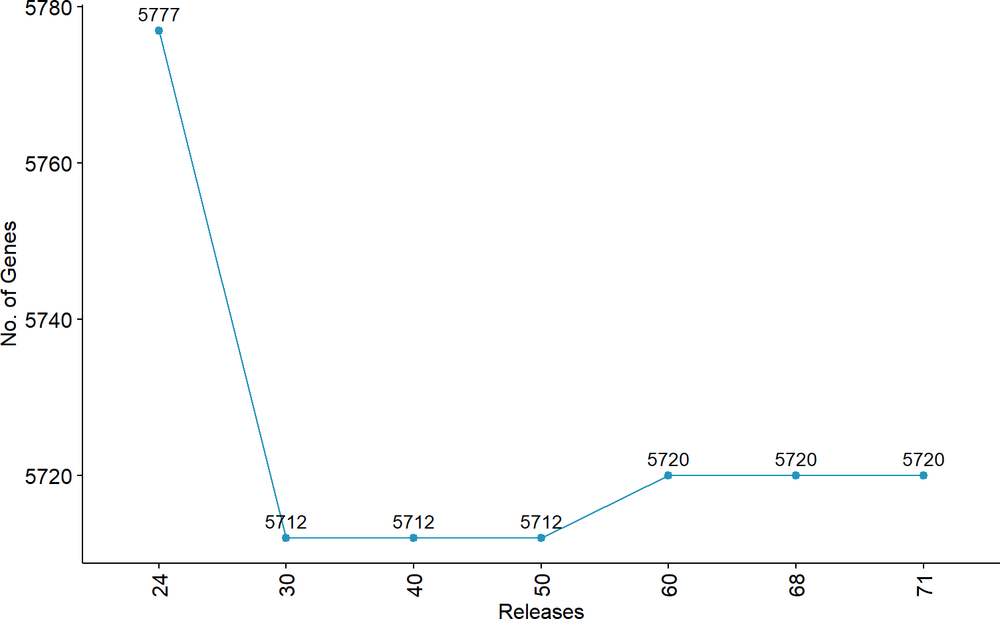
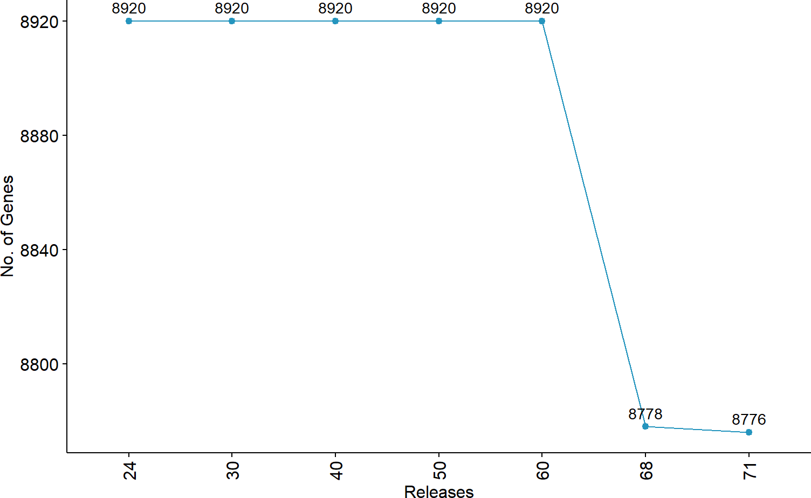
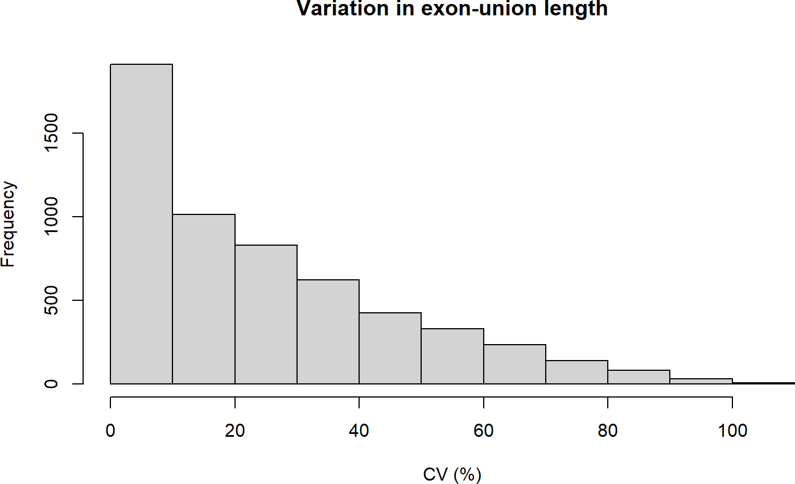
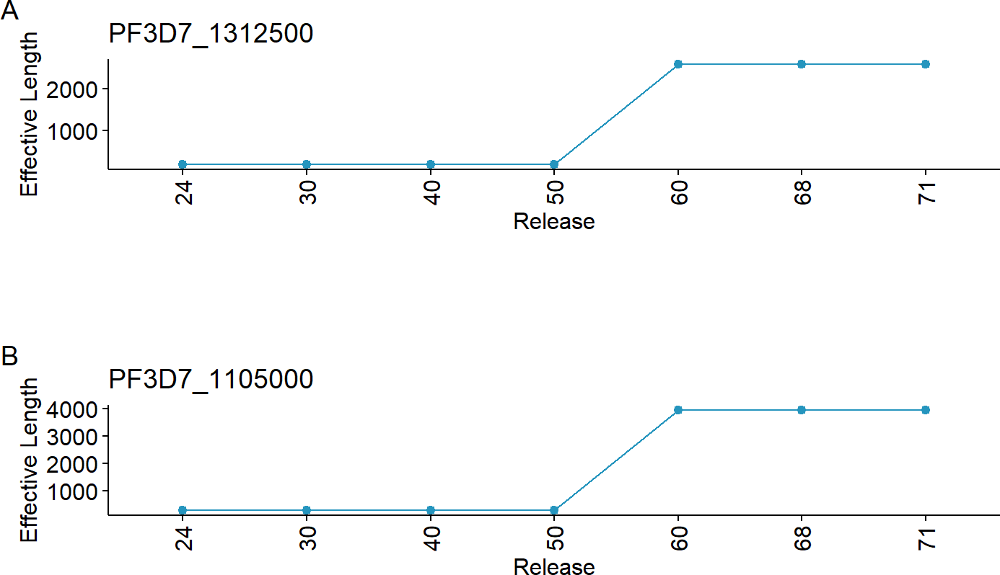
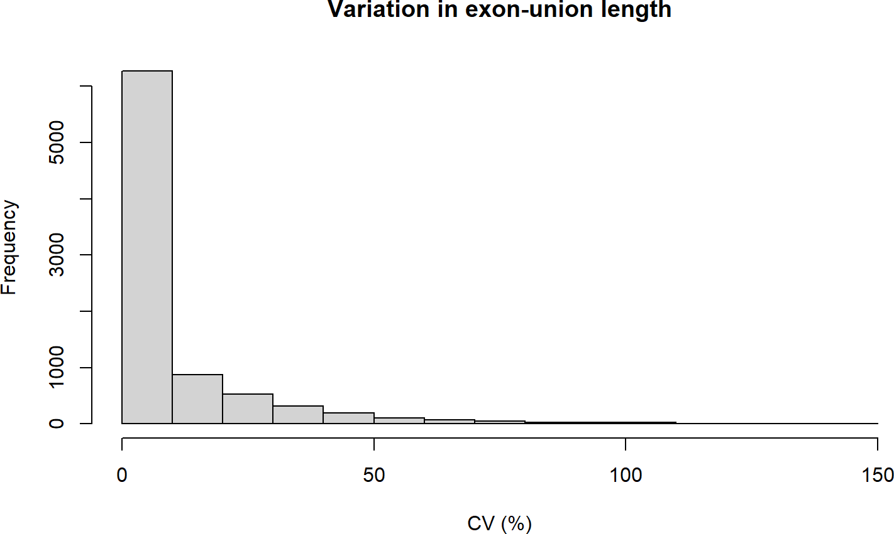
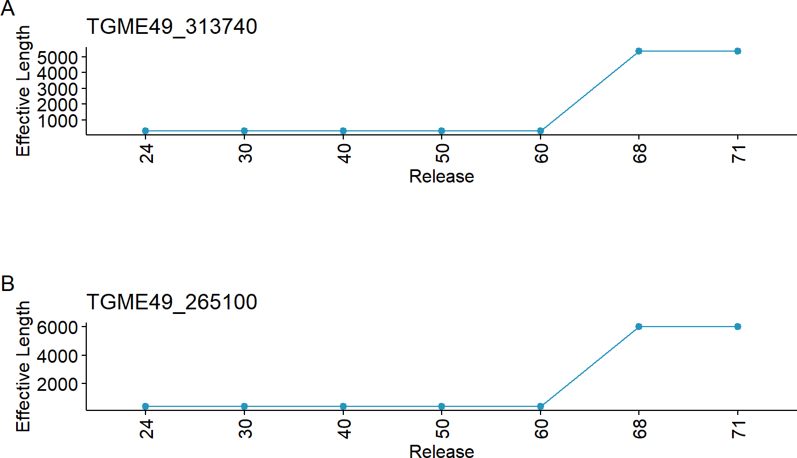

RNASeq: Need for reanalysis?
Rohit Satyam, Alberto Maillo, David Gomez-Cabrero, Arnab Pain
King Abdullah University of Science & Technology, Saudi Arabia21 October, 2026
Source:vignettes/Need_for_reanalysis.Rmd
Need_for_reanalysis.RmdAbstract
This section examines how annotations evolve across successive VEuPathDB releases. As exon–intron boundaries are continually refined with incoming sequencing data, tracking shifts in effective gene length enables users to decide whether existing published datasets warrant reanalysis based on the magnitude of those changes.
Introduction
In the bioinformatics community, it is common to reuse published RNA-seq count or normalized count data without reprocessing, often overlooking important technical differences such as the version of genome annotation. Assembly updates typically include revisions to:
- GFF files, where gene models and exon‐intron structures are updated, UTRs redefined etc.
- GAF files, where GO terms are revised based on newly published evidence
For RNA-seq, these updates can substantially affect downstream analyses (e.g., over-representation or pathway enrichment). These changes are often documented in the NEWS sections of VEuPathDB.
For instance, in Plasmodium and Toxoplasma, two key assembly updates were:
- Release 51 (16 Mar 2021) for PlasmoDB
- Release 66 (28 Nov 2023) for ToxoDB, which included extensive gene‐model revisions
For RNA-seq, we focus on two annotation features that can affect quantification and downstream biological interpretation. These include changes in:
- Number of Genes
- Exon–intron boundaries: Measured here using the union of annotated exons per gene. This is an exon-union length, not an RNA-seq fragment-adjusted effective transcript length.
In the example below, we will use Plasmodium and
Toxoplasma releases and the plasmoRUtils function
getEffLen() to track how effective gene lengths shift
across versions.
With release 71 of VEuPathDB, only users with subscription and API
key can access the database programmatically. Use
usethis::edit_r_environ(scope = "user") to add VEuPathDB
API using VEUPATHDB_API_KEY variable. By default, all the
functions look for VEUPATHDB_API_KEY variable for API key.
Should you store your key using any other variable, supply it using
api_key argument in VEuPathDB associated functions.
Assessing Changes in Gene Number
We will compare seven releases
(24, 30, 40, 50, 60, 68, and 71) for both
Plasmodium and Toxoplasma. From the NEWS section, we
know that in Plasmodium, several loci initially annotated as
rRNAs, lncRNAs, or coding genes were later removed, and the
mitochondrial genome of PF3D7 was revised in 2019. Similarly,
Toxoplasma TGME49 gene models underwent extensive updates in
release 66.
library(plasmoRUtils)
library(dplyr)
library(tidyr)
library(tibble)
library(ggpubr)
releases <- c(24, 30, 40, 50, 60, 68, 71)
getEffLenVEuPath <- function(
url,
api_key = Sys.getenv("VEUPATHDB_API_KEY"),
timeout = 120
) {
if (!nzchar(api_key)) {
stop(
"VEuPathDB API key is missing.",
call. = FALSE
)
}
tmp <- tempfile(fileext = ".gff")
on.exit(unlink(tmp), add = TRUE)
httr2::request(url) |>
httr2::req_auth_bearer_token(api_key) |>
httr2::req_timeout(timeout) |>
httr2::req_perform(path = tmp)
getEffLen(tmp)
}
## Fetching GFFs from PlasmoDB and calculating effective lengths
pf3d7.gffs <- lapply(releases, function(x){
paste0("https://plasmodb.org/a/service/raw-files/release-",x,"/Pfalciparum3D7/gff/data/PlasmoDB-",x,"_Pfalciparum3D7.gff") %>% getEffLenVEuPath()
}) %>% setNames(releases)
## Fetching GFFs from ToxoDB and calculating effective lengths
tgme49.gffs <- lapply(releases, function(x){
Sys.sleep(20) ## because VEuPathDB gives timeout if too many files are fetched
paste0("https://toxodb.org/a/service/raw-files/release-",x,"/TgondiiME49/gff/data/ToxoDB-",x,"_TgondiiME49.gff") %>% getEffLenVEuPath()
}) %>% setNames(releases)
## Let's plot changes in number of genes
pf3d7.ngenes<- lapply(pf3d7.gffs, nrow) %>% setNames(releases) %>% plyr::ldply()
tgme49.ngenes<- lapply(tgme49.gffs, nrow) %>% setNames(releases) %>% plyr::ldply()
ggpubr::ggline(pf3d7.ngenes,x=".id",y="V1", label = TRUE, color = "#2595be", fill = "#2595be")+labs(x="Releases",y="No. of Genes")+theme(axis.text.x = element_text(angle = 90, vjust = 0.5))
ggpubr::ggline(tgme49.ngenes,x=".id",y="V1", label = TRUE, color = "#2595be", fill = "#2595be")+labs(x="Releases",y="No. of Genes")+theme(axis.text.x = element_text(angle = 90, vjust = 0.5))
The plotted values describe the number of annotated gene IDs with computable exon-union lengths in each selected release. These counts should not be interpreted as a direct count of genes gained or lost without matching gene identifiers across releases.
Assessing the difference in Effective gene lengths
To compare relative variation in exon-union length across releases, we calculate the coefficient of variation:
CV (%) = 100 × standard deviation / mean
A gene with unchanged exon-union length across releases has CV = 0. Higher CV indicates greater relative variability; for example, a 100-bp difference matters more for a 200-bp feature than for a 5,000-bp feature.
We will calculate CV using following steps:
- Because gene IDs may vary across releases, we will first convert
unambiguous legacy gene IDs to current IDs using
toGeneid()and retain genes represented in all selected releases. - In old annotations like release 24, some genes coding for multiple
transcripts are present as separate gene entries each coding for 1
transcripts often denoted by versions before them such as
PF3D7_0618900.1,PF3D7_0618900.2. This issue has been fixed in latest releases. To handle this we will remove the versions from gene IDs and average the exon-union lengths for duplicate legacy gene rows for descriptive comparison; this does not replace transcript-aware quantification. - Calculate CV for genes with complete release coverage and identify those with CV greater than zero.
# map only unambiguous legacy IDs to a current gene ID.
map_legacy_ids <- function(df, annotation, organism, database) {
legacy <- setdiff(unique(df$GeneID), unique(annotation$`Gene ID`))
if (!length(legacy)) return(df)
map <- toGeneid(legacy, from = "old", to = "ensembl") %>%
dplyr::select(`Input ID`, `Gene ID`) %>%
dplyr::distinct() %>%
dplyr::group_by(`Input ID`) %>%
dplyr::filter(dplyr::n_distinct(`Gene ID`) == 1L) %>%
dplyr::ungroup()
ix <- match(df$GeneID, map$`Input ID`)
replace <- !is.na(ix)
df$GeneID[replace] <- map$`Gene ID`[ix[replace]]
df
}
### Step1
# Remove version suffix from GeneIDs
df <- pf3d7.gffs %>% plyr::ldply() %>%
mutate(GeneID = sub("\\.[0-9]+$", "", GeneID))
annot <- getTable(org = "Plasmodium falciparum 3D7", db = "plasmodb")
df <- map_legacy_ids(df, annot, "Plasmodium falciparum 3D7", "plasmodb")
subdf <- df %>% dplyr::filter(GeneID %in% annot$`Gene ID`)
### Step 2
# Aggregate length per gene across releases
df_agg <- subdf %>%
group_by(.id, GeneID) %>%
summarise(mean_length = round(mean(Length, na.rm = TRUE)), .groups = "drop") %>%
pivot_wider(names_from = GeneID, values_from = mean_length, values_fill = NA) %>%
column_to_rownames(".id") %>%
as.matrix() %>% { stopifnot(setequal(rownames(.), as.character(releases))); .[, colSums(!is.na(.)) == length(releases), drop = FALSE] }
### Step 3
# Coefficient of variation across releases
cv <- apply(df_agg, 2, function(x) (sd(x, na.rm = TRUE) / mean(x, na.rm = TRUE)) * 100) %>%
sort(decreasing = TRUE)
## How many genes have their effective exon length change >100 bp between versions 50 and 71
table((df_agg["71", ] - df_agg["50", ]) > 100) ##4434
#>
#> FALSE TRUE
#> 1198 4434
## Check for how many genes the effective length has changed
table(cv > 0, useNA = "ifany")
#>
#> FALSE TRUE
#> 1095 4537
hist(cv[is.finite(cv)], main = "Variation in exon-union length", xlab = "CV (%)") 
## Let's filter top 20 genes whose effective length has changed drastically and see what they are
annot %>%
dplyr::select(`Gene ID`, `Product Description`) %>%
dplyr::distinct(`Gene ID`, .keep_all = TRUE) %>%
dplyr::filter(`Gene ID` %in% utils::head(names(cv), 20L)) %>%
dplyr::mutate(cv = unname(cv[match(`Gene ID`, names(cv))])) %>%
dplyr::arrange(dplyr::desc(cv))
#> # A tibble: 20 × 3
#> `Gene ID` `Product Description` cv
#> <chr> <chr> <dbl>
#> 1 PF3D7_1312500 SCOT1 protein, putative 105.
#> 2 PF3D7_1105000 histone H4 104.
#> 3 PF3D7_1102800 early transcribed membrane protein 11.2 104.
#> 4 PF3D7_1252300 conserved Plasmodium protein, unknown function 102.
#> 5 PF3D7_1133000 conserved Plasmodium protein, unknown function 102.
#> 6 PF3D7_0926200 conserved Plasmodium protein, unknown function 101.
#> 7 PF3D7_0627000 conserved Plasmodium protein, unknown function 100.
#> 8 PF3D7_0221800 hypothetical protein 99.9
#> 9 PF3D7_0624500 anaphase-promoting complex subunit 11, putative 99.6
#> 10 PF3D7_0202800 conserved Plasmodium protein, unknown function 99.0
#> 11 PF3D7_0936000 ring-exported protein 2 97.7
#> 12 PF3D7_1003500 40S ribosomal protein S20e, putative 97.4
#> 13 PF3D7_1325700 conserved Plasmodium protein, unknown function 97.4
#> 14 PF3D7_0817800 respiratory chain complex 3 associated protein 3 97.4
#> 15 PF3D7_0323000 translation machinery-associated protein 7, putative 97.0
#> 16 PF3D7_0530000 conserved Plasmodium protein, unknown function 96.2
#> 17 PF3D7_1202900 high mobility group protein B1 96.1
#> 18 PF3D7_1355800 splicing factor 3B subunit 5, putative 96.0
#> 19 PF3D7_1102700 early transcribed membrane protein 11.1 96.0
#> 20 PF3D7_0705700 40S ribosomal protein S29, putative 95.5
# plot top 2 variable genes
plts <- names(cv)[1:2] %>%
lapply(function(gid) {
df %>%
filter(GeneID == gid) %>%
ggpubr::ggline(x = ".id", y = "Length",color = "#2595be", fill = "#2595be") +
labs(title = gid, x = "Release", y = "Effective Length") +
theme(axis.text.x = element_text(angle = 90, vjust = 0.5))
})
library(sjPlot)
plot_grid(plts)
These comparisons show how annotation changes can alter exon-union lengths. An observed difference in gene models motivates reassessing older quantifications, but does not itself prove that every corresponding RNA-seq read count will change.
If you are working on annotation of hypothetical genes, you should be cautious about which assembly you use since your gene might appear to be down regulated as per old annotation but this might change with change in the current annotation.
Let’s recycle the code above for Toxoplasma.
### Step1
# Remove version suffix from GeneIDs
df <- tgme49.gffs %>% plyr::ldply() %>%
mutate(GeneID = sub("\\.[0-9]+$", "", GeneID)) # strip terminal version suffix
annot <- getTable(org = "Toxoplasma gondii ME49", db = "toxodb")
df <- map_legacy_ids(df, annot, "Toxoplasma gondii ME49", "toxodb")
subdf <- df %>% dplyr::filter(GeneID %in% annot$`Gene ID`)
### Step 2
# Aggregate length per gene across releases
df_agg <- subdf %>%
group_by(.id, GeneID) %>%
summarise(mean_length = round(mean(Length, na.rm = TRUE)), .groups = "drop") %>%
pivot_wider(names_from = GeneID, values_from = mean_length, values_fill = NA) %>%
column_to_rownames(".id") %>%
as.matrix() %>% { stopifnot(setequal(rownames(.), as.character(releases))); .[, colSums(!is.na(.)) == length(releases), drop = FALSE] }
### Step 3
# Coefficient of variation across releases
cv <- apply(df_agg, 2, function(x) (sd(x, na.rm = TRUE) / mean(x, na.rm = TRUE)) * 100) %>%
sort(decreasing = TRUE)
## How many genes have their effective exon length change >100 bp
table((df_agg["71", ] - df_agg["60", ]) > 100) # 2136
#>
#> FALSE TRUE
#> 6342 2136
## Check for how many genes the effective length has changed
table(cv > 0, useNA = "ifany")
#>
#> FALSE TRUE
#> 4947 3531
hist(cv[is.finite(cv)], main = "Variation in exon-union length", xlab = "CV (%)")
## Let's filter top 20 genes whose effective length has changed drastically and see what they are
annot %>%
dplyr::select(`Gene ID`, `Product Description`) %>%
dplyr::distinct(`Gene ID`, .keep_all = TRUE) %>%
dplyr::filter(`Gene ID` %in% utils::head(names(cv), 20L)) %>%
dplyr::mutate(cv = unname(cv[match(`Gene ID`, names(cv))])) %>%
dplyr::arrange(dplyr::desc(cv))
#> # A tibble: 20 × 3
#> `Gene ID` `Product Description` cv
#> <chr> <chr> <dbl>
#> 1 TGME49_313740 zinc finger (CCCH type) motif-containing protein 140.
#> 2 TGME49_265100 hypothetical protein 137.
#> 3 TGME49_288850 hypothetical protein 131.
#> 4 TGME49_245440 PHD-finger domain-containing protein 129.
#> 5 TGME49_223845 josephin domain-containing protein 126.
#> 6 TGME49_313890 hypothetical protein 126.
#> 7 TGME49_231998 hypothetical protein 123.
#> 8 TGME49_291160 dynein light polypeptide 4, axonemal, putative 121.
#> 9 TGME49_311820 hypothetical protein 115.
#> 10 TGME49_230135 Kinesin-associated protein 115.
#> 11 TGME49_500384 F-box domain-containing protein 114.
#> 12 TGME49_500273 hypothetical protein, conserved 113.
#> 13 TGME49_209945 hypothetical protein 113.
#> 14 TGME49_254140 DNA-directed RNA polymerase II RPABC4 111.
#> 15 TGME49_244890 cyclin, putative 110.
#> 16 TGME49_310177 hypothetical protein 110.
#> 17 TGME49_240790 dynein light chain, putative 107.
#> 18 TGME49_260825 hypothetical protein 107.
#> 19 TGME49_308830 dual specificity protein phosphatase 107.
#> 20 TGME49_261470 U6 snRNA-associated Sm family protein LSm6, putative 107.
# plot top 2 variable genes
plts <- names(cv)[1:2] %>%
lapply(function(gid) {
df %>%
filter(GeneID == gid) %>%
ggpubr::ggline(x = ".id", y = "Length",color = "#2595be", fill = "#2595be") +
labs(title = gid, x = "Release", y = "Effective Length") +
theme(axis.text.x = element_text(angle = 90, vjust = 0.5))
})
library(sjPlot)
plot_grid(plts)
The same procedure shows which shared Toxoplasma genes changed their exon-union lengths between the selected releases.
Discussion
The scope of reannotation influences the comparability of legacy datasets; whether reprocessing is required depends on the type of analysis, genome assembly, annotation changes and quantification method. A prior survey of PlasmoDB datasets suggested that many published analyses relied on annotations predating release 51; any reported counts should be interpreted relative to the survey date rather than as live database statistics. For analyses sensitive to gene-model changes, reprocessing against a documented, up-to-date reference is preferable when compatible raw data are available. When reanalysis is warranted, users should document the precise reference assembly, annotation release and quantification workflow.
Session
utils::sessionInfo()
#> R version 4.4.1 (2024-06-14 ucrt)
#> Platform: x86_64-w64-mingw32/x64
#> Running under: Windows 11 x64 (build 26200)
#>
#> Matrix products: default
#>
#>
#> locale:
#> [1] LC_COLLATE=English_India.utf8 LC_CTYPE=English_India.utf8
#> [3] LC_MONETARY=English_India.utf8 LC_NUMERIC=C
#> [5] LC_TIME=English_India.utf8
#>
#> time zone: Asia/Riyadh
#> tzcode source: internal
#>
#> attached base packages:
#> [1] stats graphics grDevices utils datasets methods base
#>
#> other attached packages:
#> [1] sjPlot_2.9.0 ggpubr_1.0.0 ggplot2_4.0.3 tibble_3.3.1
#> [5] tidyr_1.3.2 dplyr_1.2.1 plasmoRUtils_1.1.3 rlang_1.3.0
#> [9] readr_2.2.0 janitor_2.2.1 BiocStyle_2.32.1
#>
#> loaded via a namespace (and not attached):
#> [1] RColorBrewer_1.1-3 rstudioapi_0.19.0
#> [3] jsonlite_2.0.0 magrittr_2.0.5
#> [5] GenomicFeatures_1.56.0 farver_2.1.2
#> [7] rmarkdown_2.32 fs_2.1.0
#> [9] BiocIO_1.14.0 zlibbioc_1.50.0
#> [11] ragg_1.5.2 vctrs_0.7.3
#> [13] memoise_2.0.1 Rsamtools_2.20.0
#> [15] RCurl_1.98-1.20 rstatix_1.1.0
#> [17] progress_1.2.3 S4Arrays_1.4.1
#> [19] htmltools_0.5.9 curl_8.1.0
#> [21] broom_1.0.13 SparseArray_1.4.8
#> [23] Formula_1.2-6 sass_0.4.10
#> [25] bslib_0.12.0 htmlwidgets_1.6.4
#> [27] desc_1.4.3 plyr_1.8.9
#> [29] httr2_1.3.0 plotly_4.12.1
#> [31] lubridate_1.9.5 cachem_1.1.0
#> [33] gt_1.4.0 GenomicAlignments_1.40.0
#> [35] lifecycle_1.0.5 pkgconfig_2.0.3
#> [37] Matrix_1.7-6 R6_2.6.1
#> [39] fastmap_1.2.0 GenomeInfoDbData_1.2.12
#> [41] MatrixGenerics_1.16.0 snakecase_0.11.1
#> [43] digest_0.6.39 AnnotationDbi_1.74.0
#> [45] S4Vectors_0.42.1 textshaping_1.0.5
#> [47] GenomicRanges_1.56.2 RSQLite_3.53.3
#> [49] labeling_0.4.3 filelock_1.0.3
#> [51] timechange_0.4.0 httr_1.4.9
#> [53] abind_1.4-8 compiler_4.4.1
#> [55] bit64_4.8.6 withr_3.0.3
#> [57] S7_0.2.2 backports_1.5.1
#> [59] BiocParallel_1.38.0 carData_3.0-6
#> [61] DBI_1.3.0 biomaRt_2.60.1
#> [63] ggsignif_0.6.4 rappdirs_0.3.4
#> [65] DelayedArray_0.30.1 rjson_0.2.23
#> [67] tools_4.4.1 chromote_0.5.1
#> [69] otel_0.2.0 glue_1.8.1
#> [71] restfulr_0.0.17 promises_1.5.0
#> [73] grid_4.4.1 reshape2_1.4.5
#> [75] generics_0.1.4 gtable_0.3.6
#> [77] tzdb_0.5.0 websocket_1.4.4
#> [79] data.table_1.18.6.1 hms_1.1.4
#> [81] utf8_1.2.6 xml2_1.6.0
#> [83] car_3.1-5 XVector_0.44.0
#> [85] BiocGenerics_0.50.0 pillar_1.11.1
#> [87] stringr_1.6.0 vroom_1.7.1
#> [89] later_1.4.8 BiocFileCache_2.12.0
#> [91] lattice_0.23-1 rtracklayer_1.64.0
#> [93] bit_4.6.0 tidyselect_1.2.1
#> [95] Biostrings_2.72.1 knitr_1.52
#> [97] gridExtra_2.3.1 bookdown_0.48
#> [99] IRanges_2.38.1 SummarizedExperiment_1.34.0
#> [101] stats4_4.4.1 xfun_0.62
#> [103] Biobase_2.64.0 matrixStats_1.5.0
#> [105] stringi_1.8.9 UCSC.utils_1.0.0
#> [107] bio3d_2.4-5 yaml_2.3.12
#> [109] evaluate_1.0.5 codetools_0.2-20
#> [111] BiocManager_1.30.27 cli_3.6.6
#> [113] systemfonts_1.3.2 processx_3.9.0
#> [115] jquerylib_0.1.4 dichromat_2.0-1
#> [117] Rcpp_1.1.2 GenomeInfoDb_1.40.1
#> [119] dbplyr_2.6.0 png_0.1-9
#> [121] XML_3.99-0.25 parallel_4.4.1
#> [123] pkgdown_2.2.1 blob_1.3.0
#> [125] easyPubMed_3.1.6 prettyunits_1.2.0
#> [127] bitops_1.1-0 txdbmaker_1.0.1
#> [129] viridisLite_0.4.3 mgsub_2.0.0
#> [131] scales_1.4.0 purrr_1.2.2
#> [133] crayon_1.5.3 KEGGREST_1.44.1
#> [135] rvest_1.0.5